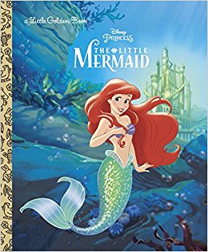

Hansel and Gretel
Hansel and Gretel
By Amanda Askew
Hansel and Gretel are the children of a poor woodcutter.
When a great famine settles over the land, the woodcutter's wife decides to take the
children into the woods and leave them there to fend for themselves, so that she and
her husband do not starve to death, because the children eat too much.

The Little Mermaid
By Michael Teitelbaum
The Little Mermaid dwells in an underwater kingdom with her widowed father (the sea king or Mer-King),
her dowager grandmother, and her five older sisters, each of whom had been born one year apart.
When a mermaid turns fifteen, she is permitted to swim to the surface for the first time to glimpse the
world above, and when the sisters become old enough, each of them visits the upper world one at a time
every year. As each returns, the Little Mermaid listens longingly to their various descriptions of the
world inhabited by human beings.